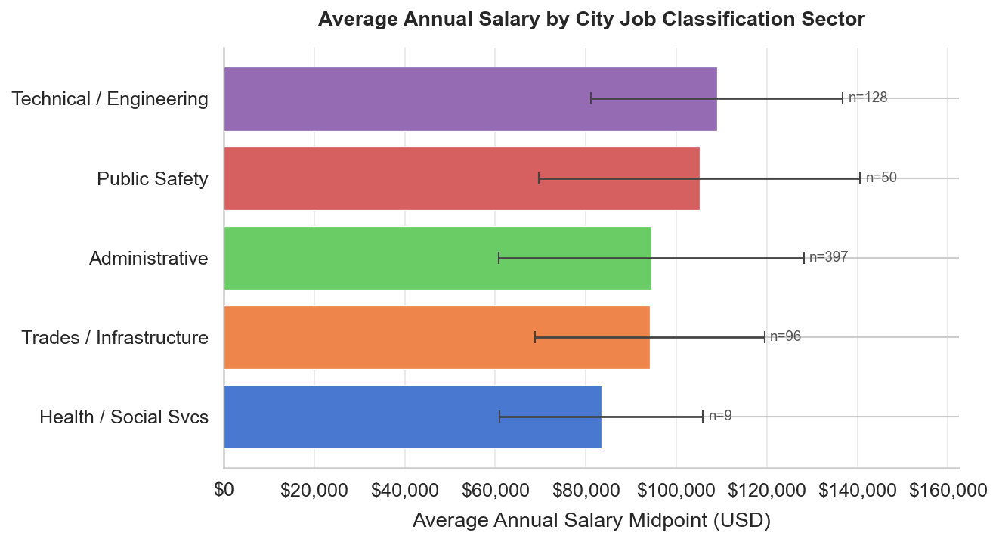
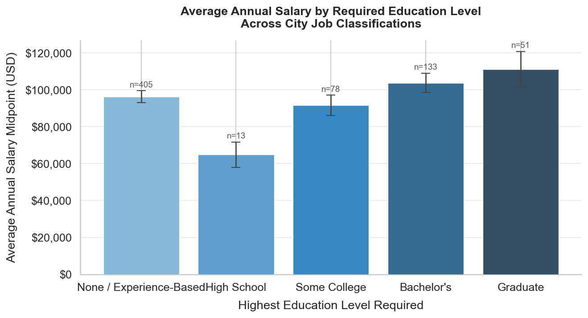
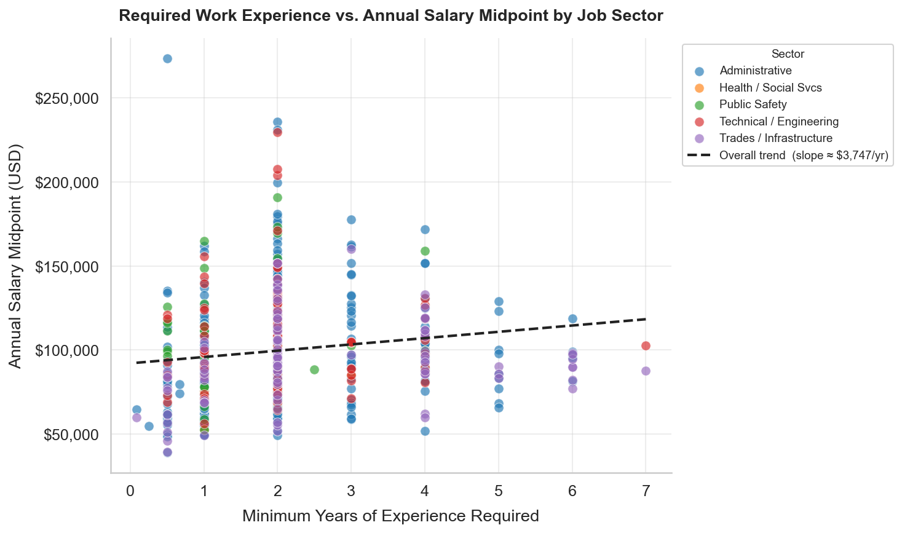
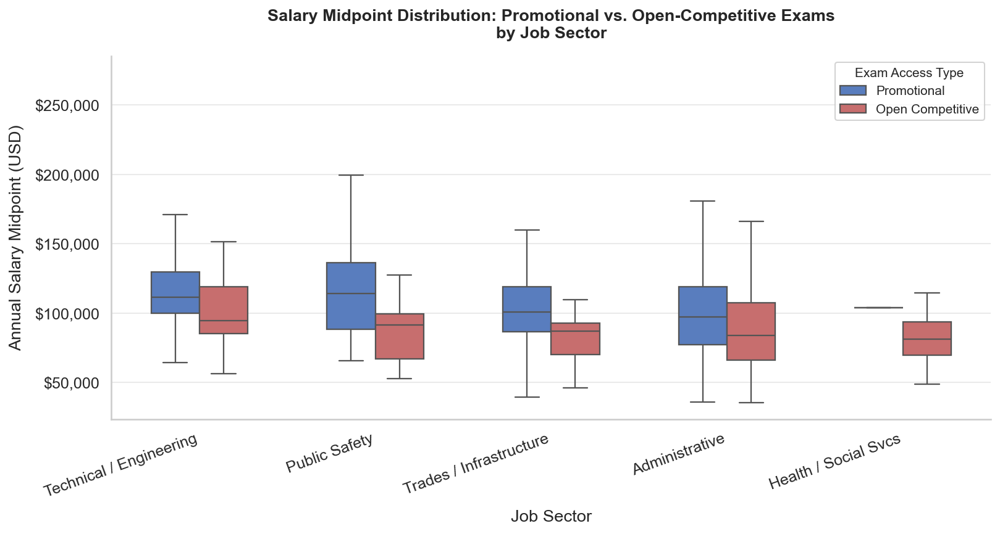
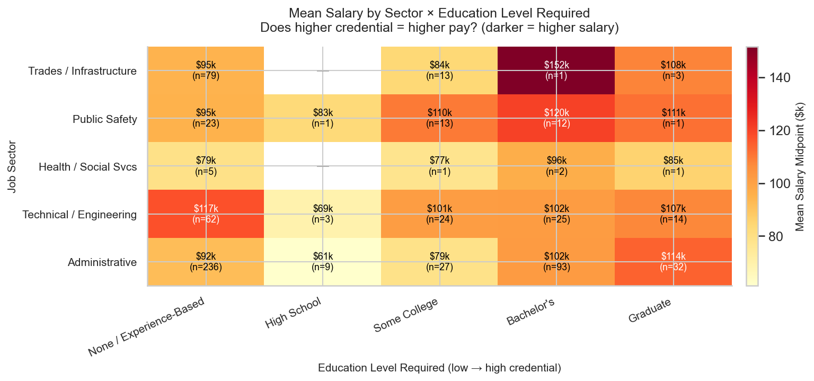

Chapter 03
Findings & Narrative
A project narrative followed by five visualizations: one argument about who the bulletins let in, told through salary, education, experience, exam access, and the interaction between them all.
Project narrative
A meritocracy on paper.
The City of Los Angeles civil service system is built around a core idea: public jobs should be accessible to the public through a fair, organized, and objective recruitment process. By using standardized examinations, minimum qualifications that are explicitly listed, and job bulletins distributed to the public, the system is designed to create an equitable path for jobseekers looking into city government. These rules are designed to make hiring decisions based strictly on skills, education, and objective qualifications, supposedly stripping away nepotism and subjectivity that can disrupt private-sector hiring. However, standardizing a human resources system does not guarantee that everyone has the same experience with it.
Our project analyzes approximately 683 official City of Los Angeles civil service job bulletins to explore how required credentials, work experience, and internal promotion systems shape who can enter different types of municipal jobs, and furthermore, how those jobs are compensated. To understand how the civil service system defines qualifications and rewards different types of work, we examine five core questions, each paired with a data visualization in the findings below.
The myth and reality of merit-based public employment.
Research demonstrates that merit principles such as open competition, qualification-based hiring, and protection from political influence are essential for maintaining both legitimacy and fairness in public employment (Brewer et al.). When workers see strong adherence to these principles, they report higher job satisfaction and lower turnover intentions, confirming that merit systems remain crucial for workplace quality (Brewer et al.).
Government employment also attracts a certain kind of applicant. Individuals motivated by a desire to contribute to society, a psychological concept known as "public service motivation," are far more likely to select public sector jobs over private sector roles, even when accounting for salary and job security (Carpenter et al.). Because applicants may be drawn to civil service for reasons beyond financial gain alone, the language and framing used in recruitment becomes all the more consequential.
Despite these principles, standardized systems are not insulated from the societal inequalities that surround them. The way a municipal job describes its required skills, physical demands, and educational qualifications affects how applicants perceive and assess their own opportunities and potential for success.
Methodology: decoding the language of hiring.
To evaluate how access is structured across job postings, our methodology relies on computational text analysis of a purposeful dataset of 683 official City of Los Angeles civil service job bulletins. From these documents we extracted key variables: salary ranges (specifically the annual salary midpoint), minimum formal education requirements, minimum required years of experience, and examination types (open-competitive versus promotional). To identify broader trends, we organized jobs into five distinct sectors: Public Safety, Administration, Technical/Engineering, Skilled Trades, and Health/Social Services.
Text mining techniques allow researchers to move beyond smaller-scale observations and extract skills, qualifications, and hidden biases from large quantities of text (Kobayashi et al.; Senger et al.). Modern deep learning models and natural language processing tools have enabled automated classification of hiring criteria at scale (Senger et al.). However, applying computational tools requires understanding the limitations they carry. Foundational research reveals that human-written text, and the algorithms used to process it, are rarely neutral. Word embeddings trained on large text corpora encode social stereotypes, mathematically producing associations like "man is to computer programmer as woman is to homemaker" (Bolukbasi et al.). These patterns are not random. They are inherited from biases already present in human language. Consequently, algorithmic hiring systems and automated resume screeners reproduce demographic biases related to gender, race, and age (Fabris et al.). By studying the explicit language in City of Los Angeles bulletins, we can identify how opportunities are officially framed and limited before an applicant ever encounters a screening algorithm or takes a civil service exam.
The subtle gatekeepers: language, bias, and applicant self-selection.
Job advertisements do much more than list administrative duties and salary bands. They function as recruitment and organizational communication tools that shape the applicant pool through self-selection (Mahmoud et al.; Uggerslev et al.). Throughout the recruiting process, predictors such as compensation, organizational image, and advertisement framing aggressively influence whether an individual decides to apply (Uggerslev et al.).
Sociological and linguistic research show that job postings often use coded language that reinforces systemic inequalities. In an influential study, researchers combined textual analysis and laboratory experiments to show that job advertisements in male-dominated occupations are significantly more likely to contain masculine-coded language such as "competitive," "dominant," and "leader" (Gaucher et al.). This type of wording lowers women's anticipated sense of belonging and reduces their interest in applying, even when their formal qualifications match the job requirements perfectly (Gaucher et al.). This dynamic operates at massive scale. An analysis of a large dataset of online job postings found that masculine-coded language appears far more often in higher-paying and senior positions, while feminine-coded language concentrates in lower-paying occupations (Castilla and Rho). In the context of Los Angeles, this provides a lens for comparing traditionally masculine domains like Public Safety and Technical/Engineering against Administrative or Health/Social Services roles.
This dynamic is not limited to the private sector. Research focusing specifically on public-sector recruitment confirms that language in government job postings actively shapes whether applicants elect themselves as a proper fit. More feminine wording in public job advertisements is directly associated with a higher number and larger overall share of female applicants in the candidate pool (Sievert et al.). Linguistic gatekeeping also extends beyond gender. Large-scale computational text analyses show that job advertisements encode demographic expectations that reinforce both racial and gender segregation across the labor force, implicitly signaling who "belongs" in particular roles (Hu et al.). Similarly, youth-coded language in job advertisements has been proven to predict age discrimination, linking linguistic signals to measurably lower callback rates for older applicants (Burn et al.). Together, these studies confirm that the text of a job bulletin is an active participant in labor market segregation.
Framing the public good: diversity and motivational signals.
For a massive municipality like the City of Los Angeles, diversity mandates and community representation are serious administrative concerns. Many civil service bulletins include formal Equal Employment Opportunity (EEO) language and diversity statements, particularly in departments concerned with demographic representation and public accountability. However, standardizing diversity through EEO statements can produce complicated and sometimes counterintuitive results. While explicit diversity-related messaging can increase organizational attraction among some minority applicants, its effectiveness depends heavily on the perceived credibility of the message and the organization's broader reputation (Heath et al.). In highly competitive job contexts, EEO language can even backfire, influencing applicant self-selection in ways that undermine the assumption that diversity statements always increase diversity (Leibbrandt and List).
The actual framing of the work proves to be a much stronger driver of applicant diversity. A pivotal field experiment in police recruitment demonstrated that job advertisements emphasizing community service, collaboration, and helping the public attracted significantly more applications from women and minority candidates than advertisements using traditional law-enforcement-oriented messaging (Linos). This finding is directly relevant to interpreting Los Angeles Police Department job bulletins. More broadly across the public sector, job advertisements that explicitly highlight public service values are highly effective at attracting candidates motivated by a public service mission, showing how language can shape applicant behavior well beyond formal credential requirements (Vogel et al.).
With this theoretical framework established, the five findings below map our data against these patterns and answer directly how the City of Los Angeles structures access through its bulletins.
Reading the chapter
The following five sections connect our data visualizations with the main questions of this project. Findings 01 through 04 build the case step by step: sector pay gaps, the credential inversion, the weakness of experience as a salary predictor, and the insider advantage of promotional exams. Finding 05 synthesizes them all in a single heatmap that puts sector and education level in the same frame and shows which force is dominant.
Average Annual Salary by City Job Classification Sector

Research question
How do average salaries differ across City of Los Angeles job sectors, and what do those differences reveal about which kinds of labor the civil service system values most?
Meaning in context
The chart makes the sector hierarchy immediately visible: Public Safety and Technical/Engineering anchor the top of the pay scale, while Administrative positions is by far the largest sector at n = 397 sits at the bottom. This is not simply a reflection of different skill demands; it reflects historical and political decisions about which fields the City has chosen to invest in.
The error bars tell a second story alongside the averages. Trades/Infrastructure and Technical/Engineering both show wide standard deviations, indicating that each sector contains a compressed ladder, from entry-level positions to highly paid supervisory or specialized roles. Administrative jobs, by contrast, show a narrower spread, suggesting that workers in that sector face a lower ceiling regardless of how long they stay or how much experience they accumulate.
This finding sets the frame for all four visualizations that follow. If job sector is already this strongly associated with salary before we factor in education or experience, then credentials cannot be the primary driver of compensation in the civil service system. The question shifts from "do qualifications predict pay?" to "does sector assignment override everything else?" and the next charts answer that directly.
One important limitation: the Health/Social Services category contains only nine bulletins, which is not enough to draw confident conclusions about that sector. We include it for completeness but treat it as a signal for further investigation rather than a firm finding.
Average Annual Salary by Required Education Level

Research question
Do higher formal education requirements in City of Los Angeles job bulletins consistently predict higher annual salaries, or do credential requirements operate independently of compensation, functioning as access barriers rather than markers of valued expertise?
Meaning in context
The bars do not rise cleanly from left to right. The most striking anomaly is at the bottom of the scale: "None / Experience-Based" jobs (n = 405) average a higher salary than "High School" jobs (n = 13). If credentials reliably signaled job complexity and fair pay, that inversion should not exist. It does exist and it points directly to the thesis.
The reason for the inversion becomes clear when you connect this chart back to Finding 01. The 405 jobs with no formal education requirement are not a monolith. They include Trades/Infrastructure and Public Safety positions which are sectors with some of the highest average salaries in the entire dataset, alongside Administrative roles where experience substitutes for a degree. Meanwhile, the 13 jobs that require only a High School diploma are concentrated in lower-wage clerical and support roles. The education label is not predicting salary; the sector assignment underneath it is.
The Graduate tier does reach the highest average salary, and the bachelor's tier is meaningfully above "Some College," which suggests that credential requirements are not irrelevant. But the relationship is far from linear. A worker who enters a trade or public safety role with no formal education requirement can expect to out-earn a worker in a high-school-required administrative role and, in many cases, a worker in a bachelor's-required administrative role as well.
This matters because education requirements shape who can even apply. A bachelor's degree requirement placed on an administrative analyst posting filters out candidates without a four-year credential but the salary that comes with it may be no higher than what a credentialed trade worker earns without that barrier. The gatekeeping function of the requirement does not correspond to a wage premium that would justify it.
One methodological note: the 95% confidence interval bars are wide for smaller categories, especially High School (n = 13). The average for that tier should be read cautiously. The much larger "None / Experience-Based" (n = 405) and "Bachelor's" (n = 133) categories are far more stable.
Required Work Experience vs. Annual Salary Midpoint by Sector

Research question
How does the minimum required years of work experience in City job bulletins relate to salary midpoints across job classifications, and does accumulated experience reliably translate into higher compensation or do other structural factors override that relationship?
Meaning in context
The OLS trend line rises. Experience and salary are positively associated, but the slope is just $3,747 per additional required year. The salary range in this dataset spans roughly $50,000 to $275,000. A trend that adds less than $4,000 per year of required experience across that entire spread is, practically speaking, flat. What the chart actually shows is not a gradient but a cloud, with sector identity doing far more work than the experience requirement itself.
The vertical spread at any fixed point on the x-axis is the chart's most important feature. At x = 2 years of required experience, the most heavily populated column, salaries range from roughly $50,000 to over $230,000. That $180,000 gap between the lowest and highest point in the same experience column cannot be explained by experience. It is explained by sector. The highest points at 2 years are Technical/Engineering (red), which cluster near the top of the salary range there, while the lowest are Administrative (blue) roles with similar experience requirements but far lower pay.
The single highest point on the entire chart, an Administrative job at approximately $275,000 with near zero years of required experience, is an outlier that illustrates a separate dynamic: a small number of senior executive or director-level administrative roles command exceptional salaries without formal experience requirements, likely because they are political appointments or specialized leadership positions. This does not change the overall pattern but serves as a reminder that "Administrative" is a broad catch-all category.
Most jobs in this dataset require between 0 and 4 years of experience; very few extend past 5. The points thin out sharply after x = 4, which means the right tail of the trend line is based on a small number of outliers. The OLS slope is pulled up by a few high-experience, mid-salary Administrative points at x = 5–7 and should not be read as a reliable prediction at those experience levels.
This visualization also has an important methodological limit. The experience values we parse are the minimums stated in the bulletin requirements, not the actual tenure of anyone currently employed in these roles. Promotional positions, which tend to pay more, often list experience requirements that can only be met by existing City employees. So in part, this chart is measuring how long you must already be inside the system to qualify for its higher-paying internal roles, not the open-market value of experience itself.
Salary Midpoint Distribution: Promotional vs. Open-Competitive Exams by Sector

Research question
What does the distribution of salary ranges for internally-restricted (promotional) versus open-competitive City job classifications reveal about who the civil service structure rewards, and how does the insider advantage vary across job sectors?
Meaning in context
In every sector where a meaningful comparison is possible, the Promotional box sits higher than the Open Competitive box. The insider advantage is not a quirk of one field, it is a structural feature of the system. Employees who are already inside have access to a higher-paying tier of jobs that external applicants cannot reach no matter their qualifications.
The pattern is sharpest in Public Safety, where Promotional jobs (n = 29) slightly outnumber Open Competitive ones (n = 21) and the salary distributions diverge the most visibly. Many Public Safety roles are structured as promotion ladders, Detective, Sergeant, Captain, where incumbents move up through internal exams. An outside applicant can enter at the bottom, but the higher-paid rungs are closed to them entirely.
Technical/Engineering tells a similar story with almost equal numbers on each side (n = 65 Promotional vs. n = 63 Open Competitive). The median Promotional salary is higher there as well, suggesting that even in a credentialed field where outside talent is plentiful, the system still carves out a better-compensated internal track.
Administrative is the most numerically dominant sector (n = 165 Promotional vs. n = 232 Open Competitive), and even here the Promotional median is visibly elevated. This is important because Administrative is also the sector with the lowest overall pay from Finding 01. In other words, even in the lowest-paying sector of City government, being an insider is worth more than being an outsider with the same listed qualifications.
Together with the findings on education and experience, this chart completes a picture: the civil service system is not a single meritocracy but two overlapping ones, one for people already inside, and one for people trying to get in. The higher-salary jobs in every sector are disproportionately gated behind an internal-only exam process that external applicants, no matter how qualified, cannot sit.
Mean Salary by Sector and Required Education Level

Research question
Does the credential-salary relationship hold consistently across every job sector, or does it break down differently depending on the type of work. If so, which force is stronger, the sector a job belongs to, or the education it requires?
Meaning in context
If formal education reliably determined pay, every row in this heatmap would brighten uniformly from left to right moving from "None / Experience-Based" toward "Graduate." Instead, the rows stay roughly consistent in color across education levels, while the rows themselves differ dramatically from each other. Sector assignment, not credential level, is the dominant driver of salary in this dataset.
The Trades/Infrastructure and Public Safety rows are the clearest evidence. Both remain in the darker orange to red range even in the leftmost column, jobs that require no formal education credential at all. A Trades/Infrastructure job with no education requirement pays more, on average, than a Graduate-level Administrative job. That single comparison is the most direct test of the thesis this project advances: credential barriers in the City of LA civil service system do not consistently map onto compensation outcomes.
The Administrative row tells the other half of the story. Moving from "None / Experience-Based" to "Graduate" in Administrative does produce a color gradient. The cells do get somewhat darker as credentials increase but the gradient is shallower than you might expect, and the entire row sits below the Trades and Public Safety rows at every education level. A graduate-credentialed administrative worker is out-earned by an experience-only trades worker. The credential premium exists within the sector but cannot overcome the sector penalty.
This visualization synthesizes Findings 01 and 02 in a single frame. Finding 01 established that sector predicts salary. Finding 02 showed that education does not predict salary in a clean linear way. This heatmap shows the two variables interact. Education's effect on pay is real but operates differently depending on which sector you are in. In high-salary sectors like Trades and Public Safety, education level barely matters. In lower-salary sectors like Administrative, it matters modestly. In neither case does it override the sector effect.
One limitation applies here as well. Some cells represent very few jobs. Health/Social Services in particular has only nine bulletins total, so the cells in that row should be read as approximate rather than definitive. The patterns in the larger sectors like Administrative (n = 397), Technical/Engineering (n = 128), Trades/Infrastructure (n = 96) are far more statistically robust.
Conclusion
What the bulletins say about access.
Key takeaways
- →Job sector is the strongest predictor of salary in this dataset. Public Safety and Technical/Engineering anchor the top of the pay scale; Administrative sits at the bottom regardless of the credential level attached to individual roles.
- →The education-to-salary relationship is not linear. "None / Experience-Based" jobs (n = 405) average a higher salary than "High School" jobs (n = 13), because the former category is dominated by high-paying Trades and Public Safety roles. Credentials function as access filters, not reliable wage predictors.
- →Required work experience has a positive but weak association with salary across the full dataset. The OLS slope is positive, but sector clusters explain far more of the variation: Public Safety jobs require little experience and pay the most; Administrative jobs often require more experience and pay less.
- →In every sector with sufficient data, Promotional (insider-only) exam pathways carry higher salary distributions than Open Competitive ones. The insider advantage is structural, not incidental. It appears in the lowest-paid sector (Administrative) as well as the highest-paid (Public Safety).
- →The sector × education heatmap confirms that sector dominates credential as a salary predictor. A Trades/Infrastructure job with no formal education requirement out-earns a Graduate-level Administrative job. Education's effect on pay is real but contingent on which sector you are in.
Limitations
- — Job bulletins describe official requirements and salary ranges, but they do not show final hiring decisions or employee experiences.
- — The dataset does not include individual applicant information, exam scores, demographic data, or hiring records.
- — Snapshot in time; salaries are not CPI-adjusted across publication dates.
- — Five-sector classification is a researcher choice and condenses real heterogeneity within each category.
- — Health / Social Services subsample (n = 9) is too thin for confident claims; treat any result for that sector with caution.
- — Several cells in the sector × education heatmap contain very few jobs; sparse cells (particularly in Health / Social Services) should be read as approximate rather than definitive.
- — Experience values are bulletin minimums, not actual worker tenure. Promotional roles frequently list requirements that only incumbents can meet, which partially confounds the experience-to-salary analysis.